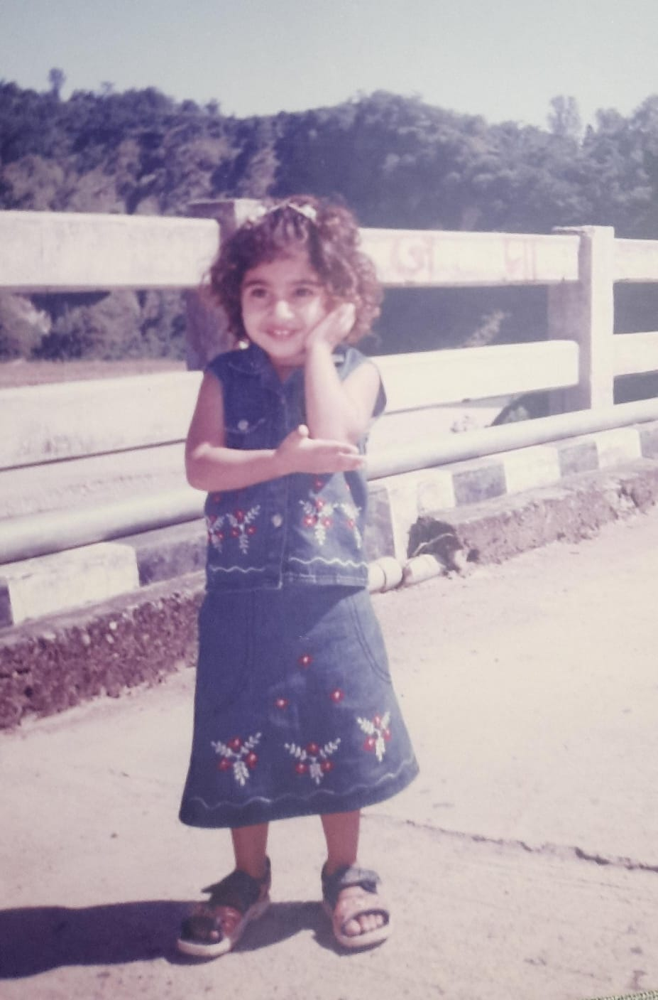

Welcome to a space dedicated to someone truly special.

To know Mansi is to know a genuinely beautiful soul, both inside and out. She is the rare kind of person who effortlessly combines a brilliantly intelligent mind with the sweetest, most caring heart. Whether she is lighting up the room with her undeniable cuteness or going out of her way to be helpful to those around her, Mansi makes the world a brighter place just by being in it. She is thoughtful, incredibly smart, and carries a warmth that makes everyone feel instantly at home.
Mansi is a beautiful blend of warmth, intelligence, and grace. With her endlessly caring nature, quick mind, and the sweetest personality, she leaves a little bit of magic wherever she goes. She isn't just cute; she's profoundly kind, always helpful, and wonderfully smart.
A space about Mansi wouldn't be complete without mentioning Kashish, her absolute best friend. Kashish is the one who spends the most time with her, constantly staying by her side through thick and thin. More than just a friend, Kashish steps up to play every role Mansi needs—whether it's a true best friend, a protective brother, or a constant pillar of support. Their beautiful bond and Kashish's unwavering loyalty make Mansi's world even more wonderful.